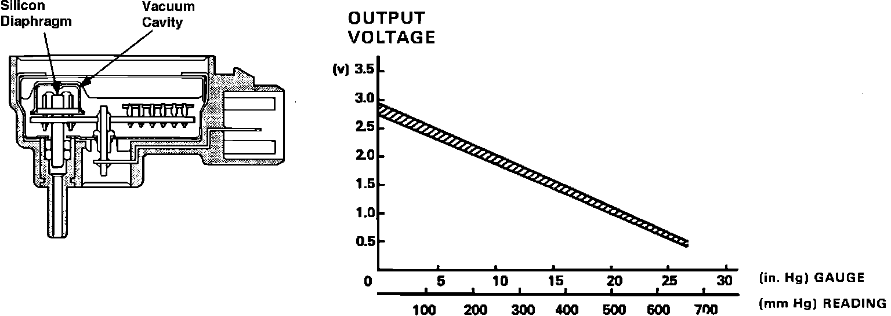

Manifold Pressure/Vacuum Sensor: Description and Operation
MAP Sensor Construction and Operation:

The manifold absolute pressure (MAP) sensor is mounted to the rear wall of the engine compartment. The sensor consists of a silicon diaphragm and some support circuitry. The ECU supplies a 5 volt signal and a ground to the sensor from terminals C15 and C14 respectively. A vacuum line supplies intake manifold vacuum to a small cavity under the silicon diaphragm which causes the diaphragm to flex. The flexing of the silicon generates a small voltage which is amplified by the support circuitry and used to modify the fixed 5 volt signal supplied by the ECU. The modified signal is then returned to ECU pin C11. The ECU uses the MAP sensor signal to sense engine load so that ignition timing and fuel delivery can be adjusted maintain consistent engine performance.